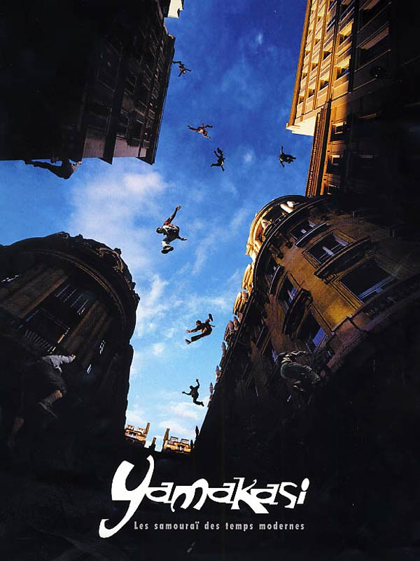

Introduccion
Antes de ser conocido como el deporte de los locos que saltan edificios, el parkour sufrió una serie de transformaciones y adaptaciones, teniendo parte de su origen con La méthode naturelle (el método natural) desarrollado por George Herbert, luego pasando a ser adaptado más específicamente por el integrante de las fuerzas armadas francesas Raymond Belle para finalmente ser fundado como "Parkour" por el hijo de este, David Belle, que perteneció al primer grupo de parkour llamado "Los Yamakasi".
La méthode naturelle
Georges Hébert (1875-1957)

Fue un oficial de la Armada francesa y el fundador del Méthode Naturelle, un método de educación física.
En la marina, Hebert navegó por los mares de América del Sur y del Norte y las Antillas hasta 1903. La primera inspiración de Hebert fueron los capitanes de los veleros, excepcionalmente atléticos y resistentes.
Durante sus viajes, admiró a los nativos, cuya condición física y capacidad para moverse a través de terrenos irregulares, a veces peligrosos, de una manera aparentemente natural y de manera fluida, le hizo creer que un enfoque orgánico de la aptitud física era superior al más reglamentado de la época.
Fuertes y elegantes mujeres carboneras en Martinica influyeron en la posterior dedicación de Hebert a la educación física de las mujeres.

Durante sus estadías en los puertos de los EE. UU., Hebert conoció el entrenamiento de estudiantes de deportes en la Universidad de Filadelfia y culturistas en gimnasios modernos: el Attila's Athletic Studio y la Escuela de Cultura Física en Broadway en Nueva York.
Hebert fue testigo de la Guerra Hispanoamericana de 1898 y de las revoluciones y rebeliones sudamericanas en Cuba, Uruguay, Venezuela y Colombia. Hebert quedó impresionado por el desempeño, la agilidad, el instinto y la elegancia de los habitantes nativos, partisanos y guerrilleros.
Su superioridad sobre las tropas y los atletas entrenados al estilo europeo o americano convencen a Hebert de la necesidad de reformar la educación física.
Nace entonces La méthode naturelle un entrenamiento distinto a los disponibles
del momento como la gimnasia artística o el fisicoculturismo, puesto en palabras de Hebert "El mundo moderno está fabricando hombres más centrados en su apariencia que en su función" dando nacimiento al lema luego adoptado por el parkour "Ser y durar" (Être et durer) y "Ser fuerte para ser útil" (être fort pour être utile).
La idea de este método es entrenar a los individuos en distintas áreas o familias como las llama Hebert, estas son:
Caminar, correr, saltar, movimiento cuadrúpedo, lanzar y transportar objetos, equilibrarse, trepar, defenderse y nadar.
Eventualmente, Hebert decide instruir a la milicia francesa con su método natural
creando los "parcours du combattant" una serie de pistas obstáculos que se volvería el estándar del entrenamiento militar para desplazarse, estas pistas luego serian usadas por Raymond Belle lo que daría a luz a eso que hoy llamamos parkour.

El parkour adopto del método natural la capacidad de moverse de manera cuadrupedal, el balance, el salto, la escalada y la filosofía de ser autónomo y capaz de moverse libremente utilizando tu cuerpo y el entorno, descartando el resto de las familias mencionadas por Herbert.
De estar familiarizado con ambos métodos de entrenamiento, uno puede lograr ver las similitudes.
Raymond Belle
Raymond Belle (1939-1999)

Raymond Belle Lute fue un soldado y bombero francés nacido en 1939 en Huế, Vietnam (entonces Indochina Francesa) hijo de un médico francés y una madre vietnamita y considerado uno de los precursores y originadores del Parkour.
Durante la Primera Guerra de Indochina, su padre murió y fue enviado como niño soldado a una escuela militar del Ejército Francés en Da Lat a la edad de 7 años, separándolo de su madre.
Mientras crecía en el orfanato militar francés de Da Lat, Raymond se sometió a una formación y educación militar básica, en la que se destacó. Resulta que, Raymond solía escaparse por la noche y utilizar secretamente la carrera de obstáculos, realizando repetidamente las mismas acciones una y otra vez hasta que las había reducido a sus formas más eficientes y básicas.
Para probarse a sí mismo, Raymond también diseñaría sus propias carreras de obstáculos consistentes en objetos en el entorno natural e intentaría moverse a través de ellos de la manera más rápida posible.
Debido a que realmente no se suponía que estuviera haciendo esto y enfrentaba un duro castigo si alguna vez lo atrapaban, Raymond intentaba entrenar en silencio, y pasaba incontables horas practicando cómo aterrizar sin hacer ruido. Además de aprender a guardar silencio, Raymond se lanzaba desde alturas cada vez más vertiginosas para aprender a aterrizar sin lastimarse.
Después de la culminación de la guerra de Indochina en 1954, a Raymond se le concedió la ciudadanía francesa y lo llevaron de regreso a Francia, donde permaneció en educación militar hasta poco antes de cumplir 19 años en 1958. Después de graduarse, decidió dar un buen uso a sus habilidades atléticas y convertirse en miembro del regimiento militar de bomberos de París (conocido en Francia como los sapeurs-pompiers).
Raymond quedó fascinado con el llamado "método de Naturelle" y con el lema favorito de Hébert, "ser fuerte para ser útil", que también se dice que resonó profundamente con Raymond.
Después del entrenamiento, el atletismo superior de Belle lo vio convertirse rápidamente en una leyenda en la comunidad de bomberos, y a Belle a menudo se le pedía que asumiera las misiones más peligrosas a las que se enfrentaba el servicio.
Raymond asombraría a sus compañeros al escalar edificios en segundos sin una escalera, subiendo por la tubería de desagüe y caminando naturalmente a lo largo de pequeñas repisas, docenas de pies en el aire sin ayuda.
Raymond a menudo tenía la tarea de capacitar a nuevos reclutas e incluso miembros de las fuerzas armadas sobre cómo moverse de manera más eficiente a través de un entorno urbano.
Durante uno de esos ejercicios de entrenamiento, se dice que Raymond habló con una serie de nuevos reclutas sobre cómo no temer a las alturas era esencial para ser un buen bombero, antes de correr a toda velocidad hacia una ventana cercana y hacer un salto frontal. En uniforme completo de extinción de incendios.
Historias como estas se transmitieron al hijo de Raymond, David, quien se sintió tan inspirado por las hazañas casi sobrehumanas de su padre que comenzó a emularlas, lo que finalmente lo llevó a desarrollar parkour, una versión más flexible del sistema de entrenamiento "méthode naturelle" que Raymond creía. En eso destacó la eficiencia del movimiento sobre los obstáculos naturales.
La enseñanza de Raymond sigue viva no solo a través de su hijo David, sino a través del servicio francés de bomberos, del cual su otro hijo es miembro. Hasta el día de hoy, los sapeurs-pompiers perfeccionan sus habilidades al participar en competiciones entre sí para escalar obstáculos, subir escaleras y cargar pesos en terrenos irregulares. También se sabe que entrenan en parkour de vez en cuando con David.
David Belle
David Belle (1973-actualidad)
Belle nació el 29 de abril de 1973 en la pequeña ciudad de Fécamp, al nordeste de Francia, en el seno de una modesta familia de los suburbios de París. Su abuelo Gilbert Kitten, su padre Raymond Belle y su hermano Jean-François Belle han pertenecido a los altamente calificados equipos de rescate de la Brigada de Incendios Militar de París, conocida como Sapeurs Pompiers.
En 1984, a la edad de 11 años, Belle se trasladó a la ciudad de Lisses, donde trabó amistad con un grupo de adolescentes con una pasión por la actividad física similar a la suya; juntos comenzaron a entrenar. Algunos de los amigos que entrenaban con David, se conocerían más adelante como los "Yamakasi". Poco después, David pasó un tiempo en la brigada militar de bomberos, con la aspiración de seguir los pasos de su padre y abuelo; pero abandonó poco después por motivos personales, a fin de dedicarse de lleno al Parkour.
Más tarde se unió a las Troupes de marine en Vannes donde recibió una promoción, un certificado de honor a la agilidad gimnástica, y fue campeón del regimiento en escalada con cuerda (ganado tiempo atrás por su padre) y del curso de obstáculos Essonne. Sin embargo, Belle ha declarado que su gusto y amor por la aventura y la libertad no se llevan bien con la vida militar de los regimientos.
Al término de su servicio militar, trabajó en diversas profesiones, incluyendo un trabajo en un almacén, guardia de seguridad y vendedor de muebles. También pasó 3 meses en la India para estudiar kung-fu. Después de su regreso, continuó su formación en el Parkour y filmó distintas secuencias de sus capacidades, que más tarde se convertirían en el famoso video "Speed Air Man". En 1997 el equipo de Stade 2 (Francis Marroto, Pierre Sled y Pierre Salviac), vieron un video de Belle y decidió filmar un reportaje sobre el parkour.
En la filmación de esta noticia se utilizó por primera vez, en relación con el grupo, el término Yamakasi. David no aprobaba el nombre y sentía como si no se diera crédito a su padre, por lo que se separó del grupo después de la filmación.
Más tarde, David pasaría a formar a otros estudiantes que comenzaron a llamarse a sí mismos "trazadores". La ortografía fue cambiando más adelante en 'traceur', y desde entonces se ha utilizado para definir a un practicante de Parkour. Sin embargo, más recientemente, David afirmó que "un Traceur no es un practicante de Parkour, Traceur es alguien que está tratando de entender el Parkour".
Los Yamakasi
Eran David Belle, Yann Hnautra, Chau Belle, Laurent Piemontesi, Williams Belle, Sébastien Foucan, Malik Diouf, Guylain N'Guba Boyeke y Charles Perriere.
Aunque estos nombres son ampliamente considerados como "los fundadores", no necesariamente entrenaron juntos con tanta frecuencia como podría pensarse, ni necesariamente estuvieron de acuerdo en lo que estaban haciendo o sus objetivos para hacerlo crecer. A medida que crecía la disciplina y la atención, algunos de estos hombres se separaron de los demás para emprender diferentes actividades. Esto creó cierta confusión y conduce a algunos de los malentendidos de la disciplina que aún existen en la actualidad.
David inicialmente entrenó por su cuenta y, después de mudarse a Lisses, encontró a otros jóvenes (incluidos sus primos) que tenían deseos similares y comenzaron a entrenar juntos. El grupo se enfrentó a desafíos que los obligaron a encontrar la fuerza física y mental para tener éxito. Estos incluían entrenar sin comida ni agua, o dormir en el suelo sin una manta, para aprender a soportar el frío.
El grupo comenzó a llamarse Yamakasi - del lenguaje lingala "ya makási", que significa fuerte en la persona. Llamaron a su actividad l'art du déplacement - el arte del movimiento. El grupo complementó su formación con valores y principios compartidos con todos los integrantes, como la honestidad, el respeto, la humildad, el sacrificio y el trabajo duro.
Respetar la salud y el bienestar físico era uno de los pilares del grupo. Si algún miembro se lastimaba durante o después de la ejecución de un movimiento, el movimiento se consideraba un fracaso.
Un movimiento ejecutado una sola vez no se consideraba un logro; solo con la repetición se daba por completado al desafío. Cada movimiento tenía que repetirse al menos diez veces seguidas sin que el traceur tuviera que esforzarse al máximo o sufrir alguna lesión. Si algún traceur del grupo cometía algún error, todos tenían que empezar de nuevo.
La humildad era un principio importante. A ningún traceur se le permitía sentirse superior a otra persona, por ejemplo, ejecutando un movimiento solo para presumir frente a alguien que no podía realizar el movimiento. Si algún traceur del grupo afirmaba que había completado un desafío difícil y peligroso que no debería intentarse sin ayuda, tenía que probar sus afirmaciones volviendo a realizar el desafío. Cualquiera que mintiera violaba el principio de humildad.
A pesar del gran énfasis en lo colectivo y los principios, todos intentaban encontrar su propio camino en Parkour para lograr su desarrollo personal. El objetivo del parkour era crear los medios para ser uno mismo.

A fines de la década de 1990, después de que el hermano de David enviara fotos y videos a un programa de televisión francés, la popularidad del parkour comenzó a aumentar. Posteriormente, una serie de programas de televisión en varios países presentaron imágenes de video del grupo y, a medida que aumentaba la popularidad, comenzaron a recibir más y más ofertas.
Eventualmente, el grupo original se separó para perseguir diferentes objetivos, algunos se quedaron con la disciplina y otros se fueron.
Sin embargo, el número total de practicantes siguió aumentando y la popularidad del parkour comenzó a extenderse por todo el mundo a través de la televisión, los largometrajes y el uso cada vez mayor de métodos para compartir videos en línea.
A pesar de ser términos usados intercambiablemente, hay diferencias entre el Parkour y el FreeRunning, especialmente en sus filosofías y ejecución, el termino "FreeRunning" fue acuñado por Sebastian Foucan cuando empezaron a existir desacuerdos entre lo que David Belle veía como parkour y lo que quería perseguir a través de él.
Sin embargo, ambas disciplinas se enfocan en el movimiento y la expresión de uno mismo, si podemos señalar diferencias serian que en el caso del parkour se prioriza la eficiencia por sobre el estilo, moverse de manera eficiente a través del terreno para llegar lo más rápido posible a nuestro objetivo sin detenernos con movimientos "innecesarios".
Mientras que el freerunning premia la expresión artística al concentrarse en hacer el recorrido hacia el objetivo de la manera más "llamativa" y expresable posible, combinando movimientos del parkour con flips (mortales) o también conocidos como "tricks" (que son en sí mismo quizás una categoría aparte de estas dos disciplinas).
En el caso de nuestro taller nos enfocamos en el parkour no sin dejar de lado la parte expresiva que el mismo permite, dejando que cada traceur encuentre su forma de moverse, su "trazo", sin ser dogmáticos al respecto.